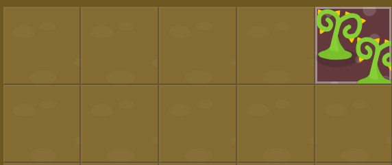
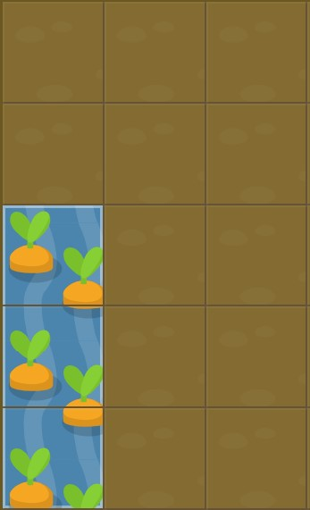

grid-column-start

grid-column-start: 5
grid-column-end
grid-column-end:4;
Ahora al contrario
grid-column-end:2
aplicando valores negativos
grid-column-end: -2;
span
En lugar de definir un elemento en la cuadrícula basado en la posicion inicial y final, puedes definirlo basado en la longitud de columnas deseada usando la palabra clave span. Ten presente que span solo funciona con valores positivos.
Por ejemplo, riega las zanahorias usando grid-column-end: span 2;
span
grid-column-end: span 2;
grid-column-start_span

grid-column-start:span 3;
grid-column
Escribir ambos grid-column-start y grid-column-end cada vez puede resultar cansado. Afortunadamente, grid-column es una propiedad abreviada que acepta ambos valores a la vez, separados por una barra oblicua.
Por ejemplo, grid-column: 2 / 4; establecerá el comienzo del elemento de la cuadrícula en la 2ª línea vertical de esta, y su final en la 4ª línea vertical.
grid-column
grid-column: 4/6;
grid-column span


grid-column: span 3/5
grid-row-start
Una de las cosas que diferencia las cuadrículas de CSS de flexbox es que puedes posicionar los elementos fácilmente en 2 dimensiones: columnas y filas. grid-row-start funciona de manera semejante a grid-column-start pero a lo largo del eje vertical.
grid-row-start

grid-row-start:3
grid-row

grid-row: 3/6;
grid-column y grid-row
grid-column:2
grid-row: 5
grid-column y grid-row
grid-column: 2/ 6
grid-row: 1/6
grid-area
Si escribir grid-column y grid-row se te hace demasiado pesado, aquí tienes otra propiedad abreviada. grid-area admite cuatro valores separados por barras oblicuas: grid-row-start, grid-column-start, grid-row-end, seguido de grid-column-end.
Un ejemplo de esto podría ser grid-area: 1 / 1 / 3 / 6;.
grid-area
grid-area: 1 / 2 / 4 / 6;
grid-area: 2 /3 /5 /6
order
Si los elementos de la cuadrícula no se sitúan explícitamente con grid-area, grid-column, grid-row, etc., se sitúan automáticamente de acuerdo al orden en el código fuente. Puedes sobrescribir esto usando la propiedad order, que es una de las ventajas de la cuadrícula frente al diseño basado en tablas.
Por defecto, el valor de order de todos los elementos es igual a 0, pero puede ser establecido a cualquier valor positivo o negativo, de manera similar a z-index.
Ahora mismo, las zanahorias en la segunda columna están siendo envenenadas y las malas hierbas en la última columna, regadas. !Cambia el valor de order del veneno para solucionar esto!
order: 5;
order:-1
Cambio el tamaño de las columnas
Hasta este momento, has tenido un jardín formado por cinco columnas, cada una ocupando el 20% de la anchura total, y cinco filas, cada una ocupando el 20% de la altura total.
Pero puedes establecer los valores en la cuadrícula como quieras. Da a grid-template-columns un nuevo valor para regar tus zanahorias. Querrás que la anchura de la primera columna sea del 50%.
Esto ha sido establecido con las propiedades grid-template-columns: 20% 20% 20% 20% 20%; y grid-template-rows: 20% 20% 20% 20% 20%;. Cada propiedad tiene cinco valores que crean cinco columnas, cada una establecida al 20% de la anchura total del jardín.
#garden {
display: grid;
grid-template-columns: 50% 50%;
grid-template-rows: 20% 20% 20% 20% 20%;
}
#water {
grid-column: 1;
grid-row: 1;
}
grid-template-columns
grid-template-columns: 50% 50%;
Repeat
Especificar un puñado de columnas con la misma anchura puede ser aburrido. Afortunadamente hay una función repeat que te ayudará con eso.
Por ejemplo, previamente hemos definido cinco columnas al 20% de anchura mediante grid-template-columns: 20% 20% 20% 20% 20%;. Esto puedes simplificarse como grid-template-columns: repeat(5, 20%);
Usando grid-template-columns con la función repeat, crea ocho columnas, cada una con una anchura del 12.5%. De esta manera no inundarás tu jardín.
Repeat
grid-template-columns: repeat(8, 12.5%);
grid-template-columns aplicando pixels y ems
grid-template-columns no acepta solo valores porcentuales, sino también otras unidades como pixels y ems. Incluso puedes mezclar diferentes unidades a la vez.
Establece tres columnas a 100px, 3em, y 40% respectivamente.
grid-template-columns: 100px 3em 40%
FR
CSS Grid también introduce una nueva medida, la fracción fr. Cada unidad fr asigna una porción del espacio disponible. Por ejemplo, si dos elementos están establecidos a 1fr y 3fr respectivamente el espacio se divide en 4 porciones iguales; el primer elemento ocupa 1/4 del espacio y el segundo elemento los 3/4 restantes.
Ahora las malas hierbas ocupan 1/6 de tu primera fila y las zanahorias los restantes 5/6. Crea dos columnas con ese ancho empleando fr.
grid-template-columns y fr
grid-template-columns: 1.2fr 6fr
ejercicio 24